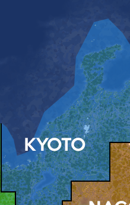

The Town of Kyoto is a peaceful builder town led by Tidesingerr. The plan of Kyoto is to create a beautiful ancient japanese town, wich represents the nation of Japan.
Kyoto will have housing, an arena, and much more community buildings!
Btw Kyoto is looking for good builders. If you are a nice guy and good at building you are always welcome!
As you can see here Kyoto is in blue.
Kyoto is bordered by Osaka and Nagoya